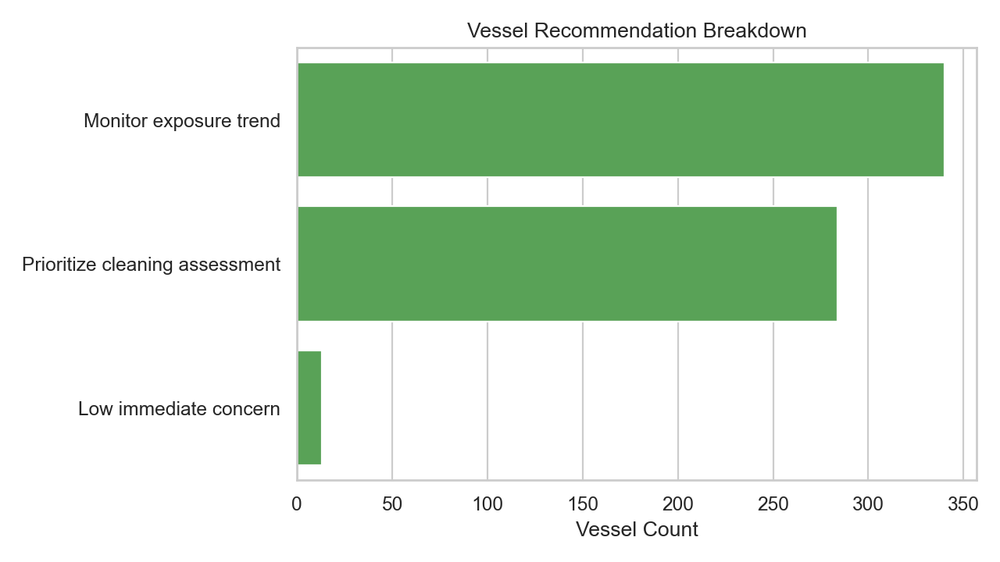
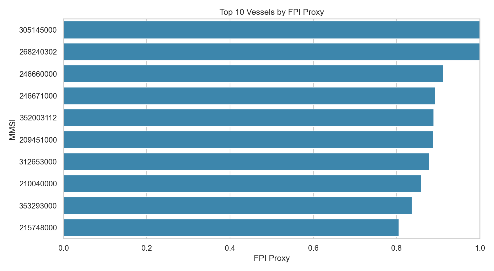

基于 AIS 与海洋环境的演示面板
先看见风险，再决定何时清洗、如何维护、哪里最值得关注。
这个页面用当前真实测试窗做演示，同时补上正式平台后续要展示的主要功能区。
你现在看到的是一个说明性很强的 demo，它的目标是让用户快速理解系统会展示什么。
当前测试时间窗20260115 至 20260130
已汇总船舶637
区域格网单元1143
当前最高风险船舶667002556
高风险格网1
表示当前时间窗下最值得优先关注的热点海域。
中风险格网78
表示可能存在持续暴露积累，需要继续观察。
优先评估清洗284
规则系统当前建议优先检查维护窗口的船舶数量。
本页展示什么
四个核心区块，对应后续正式平台的主要功能
单船诊断
已演示
展示单船的污损倾向、隐性碳排惩罚、维护建议和优先级。正式版会进入单船详情页。
区域风险地图
已演示
展示研究区内哪些海域更可能促进污损积累。后续会加入图层切换和时间窗筛选。
情景模拟
规划中
用于比较“不清洗 / 延后清洗 / 近期清洗”等方案带来的风险变化和维护差异。
维护建议
已演示
当前已能输出首版规则建议，后续会继续补经验参数和更细的推荐逻辑。
如何理解当前结果
这是一次真实测试窗的快照，不是完整年度结论
单船风险信号
MMSI 667002556
FPI 1.000，ECP 1.000
Prioritize cleaning assessment
区域热点位置
1.2750, 103.7750
RRI 0.712，等级 high
当前页面定位
这个 demo 的重点是告诉用户系统会展示什么，而不是一次性实现所有交互能力。
区域风险视图
研究区地图上显示哪些海域更可能促进污损积累
颜色越热，表示该位置在当前时间窗下越可能具备高温、生物活性、交通密度或低速暴露等风险条件。
单船与区域榜单
先看最值得关注的船和区域
高风险船舶 Top 5
667002556
Prioritize cleaning assessment
FPI 1.000
ECP 1.000
533132075
Prioritize cleaning assessment
FPI 1.000
ECP 1.000
533052300
Prioritize cleaning assessment
FPI 1.000
ECP 1.200
268240302
Prioritize cleaning assessment
FPI 1.000
ECP 1.000
563123456
Prioritize cleaning assessment
FPI 1.000
ECP 1.000
高风险格网 Top 5
1.2750, 103.7750
high
RRI 0.712
点数 41440
1.2500, 103.8750
medium
RRI 0.577
点数 25648
1.2500, 103.6250
medium
RRI 0.522
点数 18926
1.3750, 103.5500
medium
RRI 0.510
点数 17394
1.2500, 103.7750
medium
RRI 0.494
点数 18067
证据图表
当前规则系统输出了什么分层结果
左图展示当前船舶建议分布，右图展示 FPI 最高的船舶。这两张图主要用于帮助用户快速理解当前数据状态。


后续将展示的功能
这些模块当前先说明，后续再逐步做实
情景模拟器
用户可切换“当前清洗 / 延后清洗 / 不清洗”等方案，对比风险变化和建议差异。
单船报告页
后续会把当前 Markdown 报告改成可视化报告页，包含轨迹、暴露因子分解和建议说明。
区域图层切换
后续将支持环境暴露层、行为暴露层、综合风险层之间切换，并允许按时间窗或船型筛选。
维护窗口建议
后续会把建议扩展到“何时看、何时洗、为什么洗”三个层次，提升决策可读性。
当前测试窗摘要
把现阶段的演示条件说清楚
时间窗：20260115 至 20260130
空间范围：新加坡海峡及周边固定 bbox
当前环境变量：海温（thetao）与叶绿素（chl）
当前页面的目标：说明系统未来要展示什么，而不是一次性做完所有交互功能。